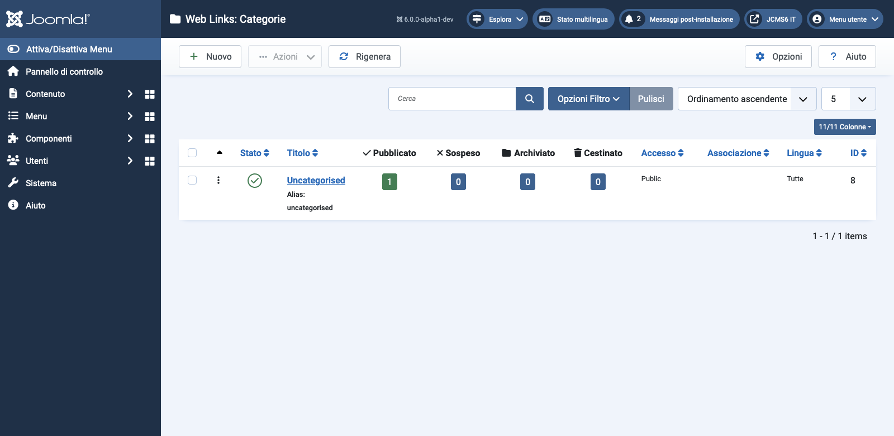

Joomla Help Screens
Link Web: Categorie
Descrizione
Le Categorie di Collegamenti Web sono solo per il Componente Collegamenti Web. Sono separate dalle altre Categorie, come quelle per Articoli, Banner, Feed di notizie e Contatti.
Elementi comuni
Alcuni elementi di questa pagina sono trattati in articoli di Aiuto separati:
- Barre degli strumenti.
- Filtri elenco.
- Intestazioni colonne elenco.
- Ordinamento elementi elenco.
- Paginazione elenco.
Come Accedere
Seleziona Componenti → Weblinks → Categorie dal menu Amministratore.
Screenshot

Tradotto da openai.com